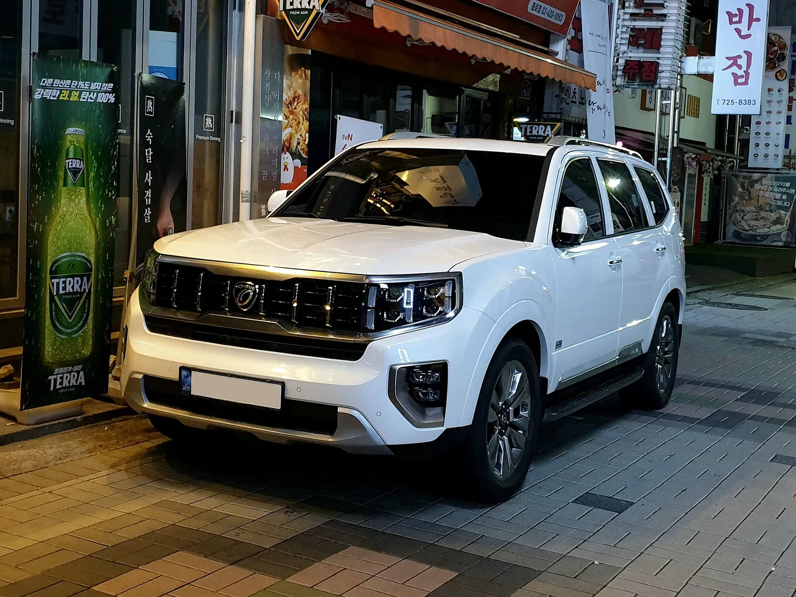
▲ 기아 모하비(2021년 촬영). 그릴·램프 형상이 2019년 이후 더 마스터로 보이지만 연식과 세대는 확정하지 않았다 ⓒ Damian B Oh (Wikimedia Commons, CC BY-SA 4.0)
"단종된 차는 오히려 값이 버틴다." 중고차 시장에서 흔히 도는 말이다. 그런데 케이카가 10월 2일 공개한 9월 중고차 시세 분석에서 단종 SUV인 '더 뉴 모하비'는 전월보다 6.6% 내려 국산 디젤 모델 가운데 낙폭이 가장 컸다. 국산 디젤 평균(-0.8%)의 8.25배(6.6 ÷ 0.8)다. 기아가 모하비 생산을 끝낸 것은 2024년 7월, 재고 판매를 마친 것은 2024년 12월로 보도됐다. 이번 하락을 "단종 소식 때문"이라고 쓰기엔 시간 간격이 너무 길다. 이 글은 하락의 원인을 단정하지 않고, 세대별 시세·같은 급 SUV 비교·부품과 보증 리스크·유지비를 직접 계산해 "지금 사도 되는지"를 따져본다.
9월 중고차 시세 전반은 케이카 9월 시세 기사(K3·K5 상승)에서 다뤘다. 이 글은 모하비 한 차종에 집중하며, 2026년 단종 국산차 전반은 2026년 단종 차량 기사와 조용히 사라진 국산차 기사를 참고하면 된다.
1. 케이카 9월 시세 — 모하비는 정확히 무엇이 내렸나
케이카(KG모빌리티플랫폼 중고차 평가 플랫폼)는 9월 주요 중고차의 평균 시세를 전월과 비교해 국산차 -0.5%, 수입차 -0.9%로 발표했다. 기아는 국내 제조사 가운데 유일하게 +0.1%를 기록했다. 디젤은 평균 -0.8%였고, 낙폭 상위에 더 뉴 모하비·더 뉴 i40·QM6가 이름을 올렸다(모하비·QM6는 뉴스핌·글로벌경제신문, i40는 뉴스핌·오토트리뷴 보도 기준).
| 항목 | 변동률 | 디젤 평균(-0.8%) 대비 | 비고 |
|---|---|---|---|
| 더 뉴 모하비 | -6.6% | 5.8%p 더 하락(8.25배) | 기아, 국내 생산 종료 2024년 7월 |
| 더 뉴 i40 | -6.2% | 5.4%p 더 하락(7.75배) | 현대, 2019년 국내 생산 중단으로 보도(검색 요약 확인) |
| QM6 | -5.3% | 4.5%p 더 하락(6.6배) | 르노코리아, 2026년 1월 홈페이지에서 삭제 |
| 국산 디젤 평균 | -0.8% | 기준 | 전체 평균은 하락 모델과 상승 모델의 합 |
| 국산차 전체 | -0.5% | 디젤보다 0.3%p 완만 | 기아만 +0.1% |
| 수입차 전체 | -0.9% | 디젤과 비슷 | — |
📍 '더 뉴 모하비'는 어느 세대일까
기아는 2016년 2월 유로6 대응 부분변경 모델을 '더 뉴 모하비'로 출시했고, 2019년에 '모하비 더 마스터'를 내놨다(머니투데이 2016.2.16, 이투데이 시승기). 케이카 보도문은 '더 뉴 모하비'만 언급하므로, 6.6% 하락이 2019~2024년식 더 마스터까지 포함한 수치인지는 확인하지 못했다. 케이카의 모델 분류 기준과 표본 수도 공개 자료에서 확인하지 못했다. 이 글의 세대별 시세 표는 이 때문에 두 세대를 나눠 정리한다.
2. 단종은 언제였나 — 보도를 시간순으로 맞춰봤다
모하비 단종 시점은 매체마다 표현이 다르다. 전자신문(2024.5.14)은 "7월 K3·모하비 단종" 계획을 보도했고, 근거로 4월 모하비 판매가 257대에 그쳤다고 전했다. 오토트리뷴(2024.10.19)은 "이미 국내 생산은 끝났고 정확한 공식 단종 시기는 내년, 재고 소진과 함께"라고 썼다. 오토데일리(2025.1.12)는 생산 중단 2024년 7월, 재고 판매 2024년 12월까지, 기아 공식 홈페이지에서 모하비 소개 페이지가 사라졌다고 전했다. 포털에 실린 다른 기사(2024.12.26)의 "2025년부터 사라지는 차" 표현은 판매 종료 해로 읽힌다.
| 시점 | 내용 | 출처 |
|---|---|---|
| 2024년 4월 | 모하비 월 판매 257대(전자신문이 단종 이유로 판매 저조 인용) | 전자신문 2024.5.14 |
| 2024년 7월 | 오토랜드 화성 1공장 모하비·K3 생산 종료(계획 보도 후 후속 보도로 확인) | 전자신문·오토데일리 |
| 2024년 9월 | HECU 화재 리콜 발표(모하비 포함 13개 차종) | 국토교통부 발표(자사 기사) |
| 2024년 12월 | 가용 재고 판매 종료 | 오토데일리 2025.1.12 |
| 2025년 1월 | 기아 공식 홈페이지 모하비 소개 페이지 삭제 보도 | 오토데일리 |
| 2026년 9월 | 케이카 시세에서 더 뉴 모하비 -6.6% | 뉴스핌·글로벌경제신문(오토트리뷴도 동일 수치 보도) |
정리하면 기아가 새 모하비를 파는 일은 2024년 12월에 끝났고, 케이카의 이번 시세는 그로부터 약 21개월(2024.12 → 2026.9) 뒤의 변동이다. 모하비의 단종은 이미 2024년 하반기부터 알려져 있었다. 그래서 이번 6.6% 하락의 원인을 단종 소식에서 찾는 것은 근거가 약하다. 케이카 분석(글로벌경제신문·오토트리뷴 공통(뉴스핌 풀이 문구는 확인하지 못함))은 디젤 전체 약세를 "유류비 부담과 친환경차 선호 확대" 등으로 설명했으나 모하비 개별 원인은 설명하지 않았다. 오토트리뷴은 같은 디젤 약세 대목에서 "일부 노후 모델은 전쟁으로 인한 수출 둔화까지 지속되며 시세 하락세가 강화됐다"고 썼지만, 이 문장이 모하비를 가리킨다는 표현은 없다.
✔ 카프리즘 관찰 — 하락 상위 3종은 모두 단종 차종
디젤 낙폭 상위 3종(모하비·i40·QM6)은 모두 신차 판매가 끝난 모델이다. 이 겹침은 사실이지만, 단종 때문에 값이 빠졌다는 인과는 어떤 보도에서도 확인하지 못했다. 단종 차종은 시장에 나오는 매물 수가 적어 월별 평균이 쉽게 출렁일 수 있다는 점도 가능한 설명이다. 다만 케이카의 표본 수가 공개되지 않아 이 역시 추정이다. 이 글에서는 "단종 차종의 디젤 시세가 크게 흔들린 달"이라고만 쓴다.
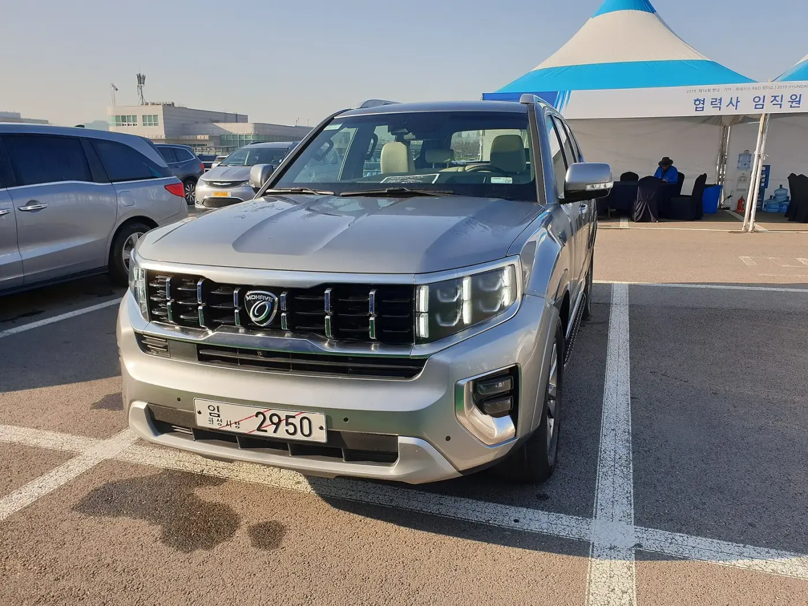
▲ 은색 모하비의 전면. 사진 설명은 2019년 촬영이며 세대 표기는 확정하지 않았다 ⓒ Damian B Oh (Wikimedia Commons, CC BY-SA 4.0)
3. 세대·연식별 중고 시세 — 같은 모하비라도 4배 넘게 벌어진다
모하비는 크게 세 갈래로 나뉜다. 2008년 출시된 1세대, 2016년 부분변경 '더 뉴 모하비', 2019년 '더 마스터'다. 가격은 세대에 따라 크게 벌어진다. 아래 표는 두 가지 자료를 나란히 놓은 것이다. 오토트리뷴은 2026년 1월 14일 기사에서 엔카닷컴 자료를 인용했고, 트렌드텐(trend10)은 2025년 상반기 기준 연식별 시세를 정리했다. 기준 시점과 산정 방식이 다르므로 직접 비교하면 안 된다.
| 구분 | 연식 | 시세 범위 | 출처·기준 |
|---|---|---|---|
| 모하비 더 마스터 | 2024년식 | 3,930~5,763 | 오토트리뷴, 엔카 자료(2026.1.14) |
| 모하비 더 마스터 | 2024년식 | 4,360~5,150 | trend10 블로그(2025년 상반기) |
| 모하비 더 마스터 | 2019년식 | 3,056~4,465 | 오토트리뷴, 엔카 자료(2026.1.14) |
| 모하비 더 마스터 | 2019년식 | 2,780~3,215 | trend10 블로그(2025년 상반기) |
| 더 뉴 모하비 | 2019년식 | 1,843~2,260 | trend10 블로그(2025년 상반기) |
| 더 뉴 모하비 | 2016년식 | 1,416~1,680 | trend10 블로그(2025년 상반기) |
| 1세대 모하비(2008~2016) | 전 연식 | 530~1,656 | trend10 블로그(2025년 상반기) |
엔카닷컴 목록에서는 모하비 더 마스터 1,178대가 올라와 있었고(조회 요약 기준, 가격 약 1,690만~4,590만 원, 주행거리 1만 500~24만 7000km), 오토트리뷴은 1월 기사에서 "26일 현재" 엔카닷컴 등록 모하비 1,893대 중 후기형 더 마스터가 1,098대로 절반 이상이라고 전했다. 두 값은 조회 시점이 달라 서로 맞지 않는다. 매물 수가 몇 달 사이에 늘었다는 해석은 가능하지만, 확인된 것은 아니다.
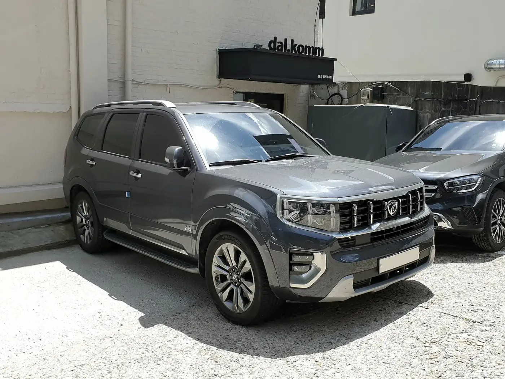
▲ 회색 모하비 전면. 세대는 확정하지 않았다 ⓒ Damian B Oh (Wikimedia Commons, CC BY-SA 4.0)
📍 "신차가보다 비싸다"는 사례는 호가다
오토트리뷴은 2022년 11월 생산 모하비 더 마스터 마스터즈 그래비티(7인승 4WD)가 엔카에 6,880만 원에 올라왔다고 전했다. 신차가 6,161만 원이라고 소개돼 있어 계산하면 719만 원(+11.7%) 높다(6,880 ÷ 6,161 = 1.117). 다만 이는 매물 하나의 호가이며 실제 거래가가 아니다. 평균 시세가 내린 시점에도 일부 최종형 매물이 신차가 근처에서 호가될 수 있다는 점만 확인된다.
다시 말해 '더 뉴 모하비'(1,416만~2,260만 원대)와 '더 마스터'(약 2,780만~5,763만 원대)는 다른 가격대의 차다. 더 마스터 범위는 출처가 다른 값을 합친 것으로, 하한 2,780만 원은 trend10(2025년 상반기), 상한 5,763만 원은 오토트리뷴(2026.1)이다. 케이카의 6.6%가 대부분 1,400만~2,300만 원대 차량의 변동이라면 금액으로는 100만~150만 원 안팎이다. 이는 카프리즘의 가정이며, 케이카 표본의 세대·가격 구성은 확인하지 못했다.
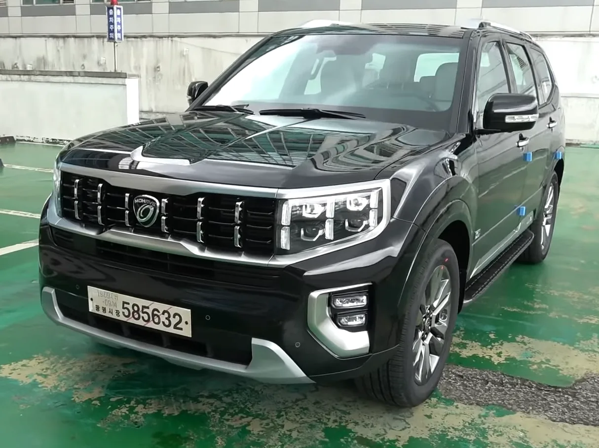
▲ 검은색 모하비 전면. 파일 정보에는 2019년으로 표기돼 있으나 연식·사양은 확정하지 않았다 ⓒ 장대표TV (Wikimedia Commons, CC BY 3.0)
4. 6.6%는 얼마일까 — 감가 환산과 3개월 시나리오
케이카 보도에는 모하비 평균 시세의 금액이 없다. 그래서 전월 평균 시세를 1,500만·2,000만·2,500만 원으로 가정해 금액으로 환산했다. 더 뉴 모하비 시세 구간(1,416만~2,260만 원, trend10)에 맞춘 임의 가정이며 실제 케이카 값이 아니다.
| 가정 전월 시세 | 9월 시세(×0.934) | 하락 금액 | 계산 |
|---|---|---|---|
| 1,500만 원 | 1,401만 원 | 99만 원 | 1,500 × 0.066 = 99 |
| 2,000만 원 | 1,868만 원 | 132만 원 | 2,000 × 0.066 = 132 |
| 2,500만 원 | 2,335만 원 | 165만 원 | 2,500 × 0.066 = 165 |
같은 하락률이 석 달 이어진다면 0.934의 세제곱은 0.8148로 약 -18.5%다. 2,000만 원 기준으로 1,630만 원 선이 된다(2,000 × 0.8148 = 1,629.6). 이는 방향을 예측한 것이 아니라 "이 속도가 이어진다면" 식의 계산이다. 케이카도 다음 달 흐름은 밝히지 않았다. 반대로 한 달 낙폭이 일시적이라면 다음 달 되돌림도 가능하다. 어느 쪽이든 월 단위 평균 시세 하나로 사고파는 시점을 정하기는 어렵다.
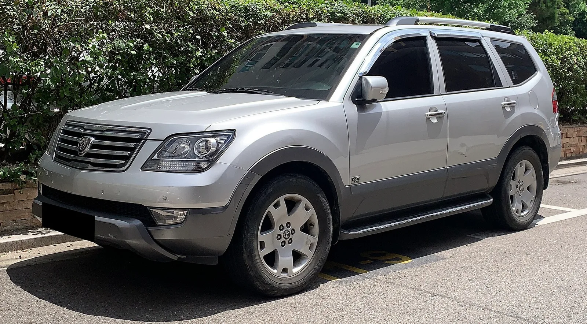
▲ 은색 모하비 전면부. 연식과 세대는 확정하지 않았다 ⓒ Benespit (Wikimedia Commons, CC BY-SA 4.0)
5. 같은 급 SUV와 비교 — GV80·팰리세이드·쏘렌토
모하비는 보디온프레임 방식 SUV다. 같은 급 모노코크 SUV로 제네시스 GV80, 현대 팰리세이드, 기아 쏘렌토를 비교 대상으로 삼았다. 공개 자료의 기준 시점과 산정 방식이 서로 달라 한 표에 넣었지만 직접 비교는 하면 안 된다.
| 모델 | 조건 | 시세 범위 | 출처·기준 |
|---|---|---|---|
| 모하비 더 마스터 | 2019~2024년식 | 3,056~5,763 | 오토트리뷴(엔카 자료, 2026.1) |
| GV80 3.0 디젤 | 2020년식 | 약 4,890~4,990(9만 km대) | 헤이딜러 블로그, 2024년 5월 기준 경매 데이터 |
| GV80 3.0 디젤 | 2021년식 | 약 4,610~4,710(9만 km대) | 헤이딜러 블로그, 2024년 5월 기준 |
| 팰리세이드 2.2 디젤 | 2020~2021년식 | 2,400~4,100(트림별 범위) | 가격 집계 사이트(검색 요약), 기준 시점 확인 못 함 |
| 더 뉴 쏘렌토(전 연료) | 2018~2020년식 | 1,344~2,162 | 카프리즘 쏘렌토 시세 기사(2026년 9월) |
GV80 수치는 2024년 5월 경매 데이터라 2026년 10월과 2년 반 차이가 난다. 팰리세이드는 시점이 불분명하고 쏘렌토는 연료 구분이 없어 디젤만의 값이 아니다. 그나마 읽을 수 있는 것은 대략적인 위치다. 최종형 모하비 더 마스터(2024년식 3,930만~5,763만 원)는 GV80 디젤 중고 가격대(2024년 5월 기준 4,600만~4,990만 원대)와 겹치고, 팰리세이드·쏘렌토는 상대적으로 낮은 가격대가 넓게 분포한다. 차급과 구조가 달라 단순 가격만으로 대체 관계를 말하기는 어렵다. 쏘렌토 세대별 시세는 쏘렌토 중고차 시세 기사에서 자세히 확인할 수 있다.
쏘렌토 디젤도 단종됐다는 점에서 비슷한 처지다. 쏘렌토 디젤은 24년 만에 라인업에서 빠졌고(쏘렌토 디젤 단종 기사), 케이카 9월 시세 보도문에서 약세 모델로 언급되지는 않았다. 다만 케이카가 쏘렌토 디젤의 9월 변동률을 따로 공개하지 않아 "단종 차종은 모두 같은 방향으로 움직이는가"는 이번 자료로 검증할 수 없다.
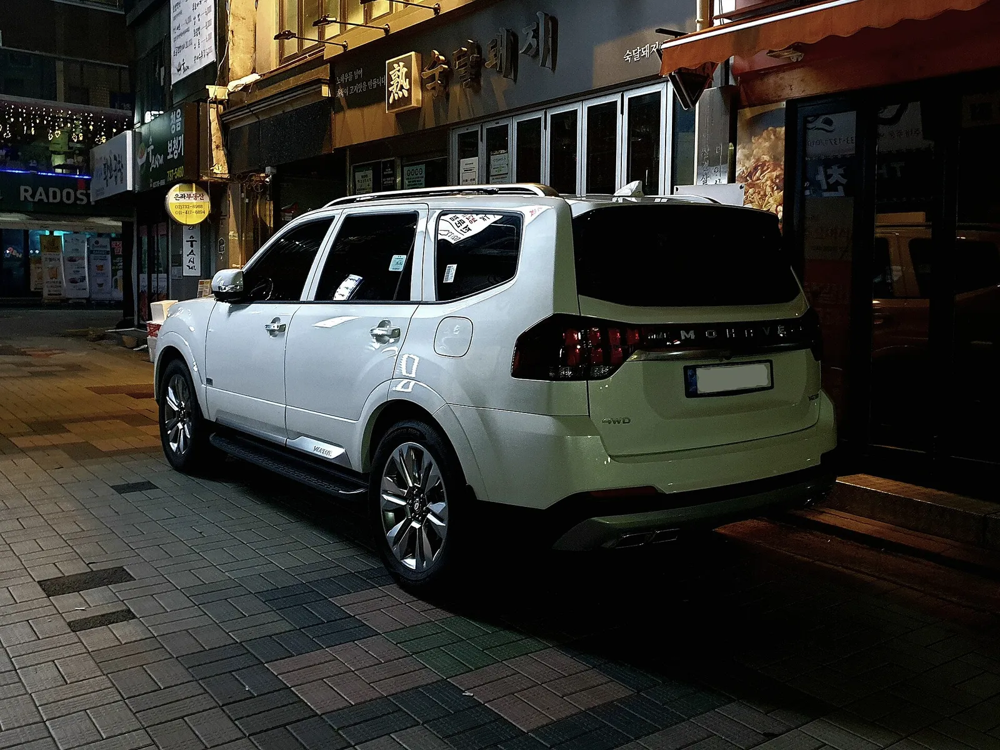
▲ 모하비 후면. 램프 형상으로 최종형 계열로 보이지만 연식은 확정하지 않았다 ⓒ Damian B Oh (Wikimedia Commons, CC BY-SA 4.0)
6. 단종 차를 중고로 살 때의 리스크 — 부품·보증·리콜
부품. 공정거래위원회 소비자분쟁해결기준은 자동차 부품 보유기간을 생산 중단 시점부터 8년으로 정한다(검색 결과 요약 확인, 원문은 열람하지 못했다). 모하비 생산이 2024년 7월 끝났다면 권고 기간은 2032년 7월 무렵까지로 계산된다(2024년 7월 + 8년). 다만 이 기준은 권고이며 강제 규정이나 처벌 조항이 없고, 부품이 없어 피해구제를 받은 사례가 드물다는 보도도 있다. 8년이 지나도 즉시 부품이 끊긴다는 뜻은 아니지만, 외장 부품·전용 센서류는 수급이 지연될 수 있다는 점은 카프리즘의 일반적 추정이다.
보증. 국산차의 일반 보증은 3년·6만 km, 엔진·동력전달은 5년·10만 km가 통상 기준이다(보증 기간 비교 자료). 모하비 개별 약관과 양수 시 승계 조건은 확인하지 못했다. 가장 늦은 2024년 12월 인도 차량이라면 일반 보증 만료는 2027년 말로 계산된다. 신차 판매 종료가 보증을 바꾼다는 근거는 찾지 못했다. 중고 구매 전에 보증 승계 가능 여부를 기아 서비스센터에 확인하는 것이 안전하다.
리콜. 2024년 9월 국토교통부가 발표한 HECU(전자제어유압장치) 화재 리콜에는 모하비가 포함됐다. 대상 연식과 현재 조치 비율은 확인하지 못했다. 내용은 HECU 화재 리콜 기사에서 정리했다. 구매 전 국토교통부 자동차리콜센터에서 차대번호로 미조치 리콜 여부를 확인하는 방법이 일반적이다.
| 항목 | 현재 확인된 것 | 확인하지 못한 것 |
|---|---|---|
| 부품 수급 | 소비자분쟁해결기준 보유기간 8년(권고), 계산상 2032년 7월 무렵 | 개별 부품의 수급 지연 사례·재고 현황 |
| 보증 | 일반 3년·6만 km, 엔진·동력 5년·10만 km가 국산차 통상 기준 | 모하비 개별 약관, 양수 시 승계 조건 |
| 리콜 | 2024년 9월 HECU 화재 리콜 대상 포함 | 대상 연식·시정 완료율 |
| 후속 모델 | 후속 SUV 없이 단종, 프레임 보디 명맥은 픽업 타스만이 이음(오토데일리) | 타스만의 SUV 대체 가능 여부 |
| 잔존가치 | 엔카 호가에서 신차가 근처 매물도 확인(오토트리뷴) | 실제 거래가 분포, 케이카 표본 구성 |
| 한정·기념판 | 공개 보도에서 단종 기념 한정판 확인 못 함 | 기아 내부 마지막 연식 한정 사양 여부 |
단종 기념 한정판이 있었는지는 이번 조사에서 확인하지 못했다. 후속 SUV는 없다. 모하비의 자리는 픽업트럭 타스만이 프레임 보디의 명맥을 잇는다고 오토데일리가 전했고, 타스만은 2.5L 가솔린 터보라 V6 디젤과 성격이 다르다. 타스만 판매 흐름은 타스만 판매 기사를 참고할 수 있다.
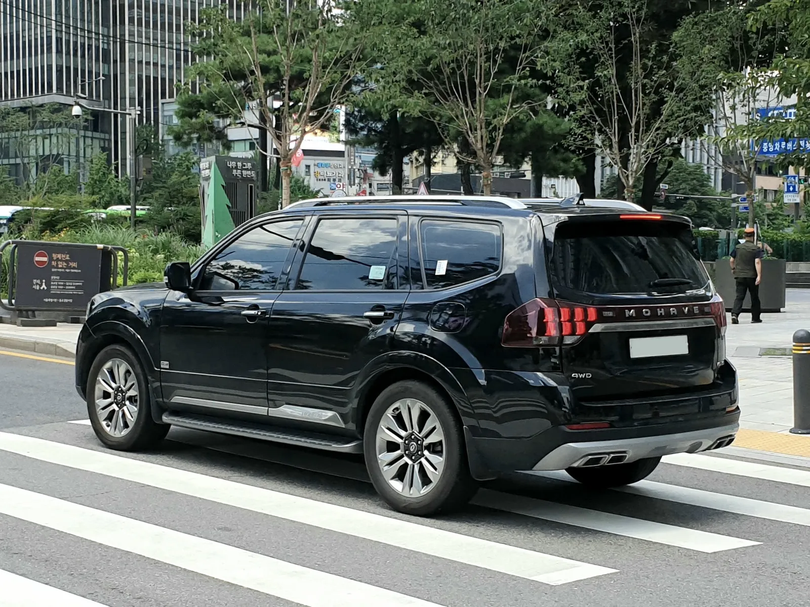
▲ 검은색 모하비 후면. 연식 세부는 확정하지 않았다 ⓒ Damian B Oh (Wikimedia Commons, CC BY-SA 4.0)
7. 유지비 계산 — 자동차세와 연료비, 요소수
모하비 V6 3.0 디젤은 배기량 2,959cc다(뉴스와 보도). 비영업용 승용차 기준 2,000cc 초과 구간은 cc당 200원, 지방교육세는 세액의 30%가 더해진다. 차령 경감은 등록 3년째부터 매년 5%씩, 최대 50%다. 아래는 2026년 납부분 기준 계산이며 연납 할인은 반영하지 않았다.
| 등록 연도 | 차령(년차) | 경감률 | 자동차세(교육세 전) | 교육세 포함 |
|---|---|---|---|---|
| 2016년 | 11년차 | 45% | 325,490원 | 423,137원 |
| 2019년 | 8년차 | 30% | 414,260원 | 538,538원 |
| 2021년 | 6년차 | 20% | 473,440원 | 615,472원 |
| 2024년 | 3년차 | 5% | 562,210원 | 730,873원 |
계산식은 2,959cc × 200원 = 591,800원이다. 여기에 경감률을 반영한 뒤 1.3을 곱했다(예: 2019년 등록 591,800 × 0.7 = 414,260원 → ×1.3 = 538,538원). 연료비는 연 1만 5000km, 더 마스터 공인 복합연비 9.1~9.4km/L의 중간값 9.2km/L, 경유 리터당 1,700원을 가정했다(15,000 ÷ 9.2 = 1,630L, 1,630 × 1,700 ≒ 277만 원). 더 뉴 모하비의 공인 연비는 확인하지 못해 같은 값을 넣었고, 실주행 연비는 이보다 낮을 수 있다. 연료비 가정이 1,600원이면 약 261만 원, 1,800원이면 약 293만 원으로 변동한다. 모하비 디젤은 SCR 방식이어서 요소수가 필요하다. 소모량을 1,200km당 1L, 리터당 2,000원으로 가정하면 연 약 2.5만 원이다. 이 소모량은 카프리즘의 단순 가정이다.
| 등록 연도 | 자동차세 | 연료비(1,700원) | 요소수(가정) | 합계 | 1km당 비용 |
|---|---|---|---|---|---|
| 2016년 | 423,137원 | 2,771,739원 | 25,000원 | 약 322만 원 | 약 215원 |
| 2019년 | 538,538원 | 2,771,739원 | 25,000원 | 약 334만 원 | 약 222원 |
| 2021년 | 615,472원 | 2,771,739원 | 25,000원 | 약 341만 원 | 약 227원 |
| 2024년 | 730,873원 | 2,771,739원 | 25,000원 | 약 353만 원 | 약 235원 |
연료비가 합계의 약 79~86%를 차지한다. 모하비는 2,959cc라 같은 차령이면 자동차세 부담이 큰 편이다. 다른 국산 SUV의 연료비 구조는 국산 SUV 연료비 기사에서 모하비 더 마스터(9.1~9.4km/L)를 포함해 비교했다. 케이카 분석이 디젤 전반 약세의 이유로 든 "유류비 부담"은 이런 연료비 구조와 맞닿는다고 볼 수 있지만, 모하비 시세 하락의 직접 원인으로 확인된 것은 아니다.
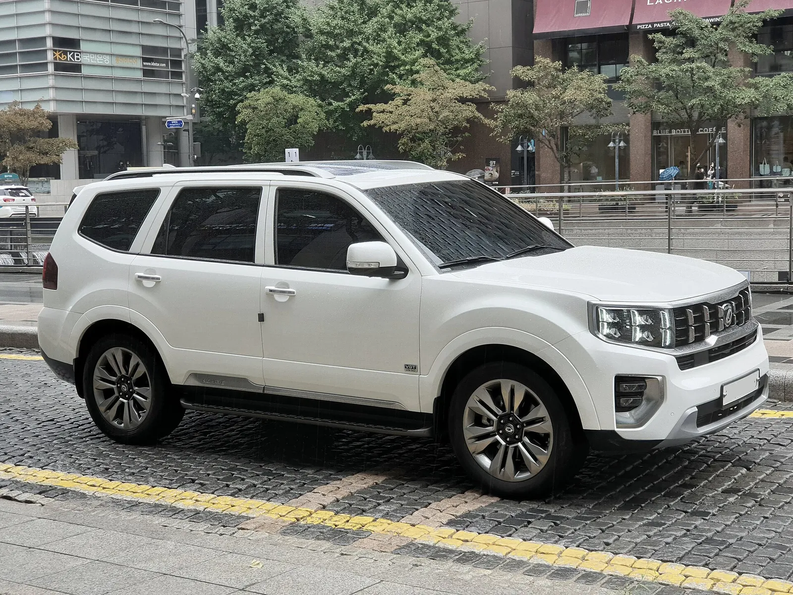
▲ 흰색 모하비 측면. 프레임 보디 SUV 특유의 높은 차체가 보인다. 연식은 확정하지 않았다 ⓒ Damian B Oh (Wikimedia Commons, CC BY-SA 4.0)
8. 지금이 기회일까 — 카프리즘의 체크리스트
결론부터 말하면 "6.6% 하락"만으로 지금이 기회라고 하기 어렵다. 월간 평균 시세 하나가 근거이고, 원인도 확인되지 않았다. 대신 어떤 사람에게는 맞고 어떤 사람에게는 맞지 않는지 조건별로 정리했다.
| 상황 | 판단 | 이유 |
|---|---|---|
| 카라반·보트 견인, 오프로드 목적 | 검토 가치 있음 | 신차로 살 수 있는 국산 V6 디젤 프레임 SUV가 없다(2024년 단종, 오토데일리) |
| 연 1만 km 이하 가끔 타는 용도 | 신중 | 연료비는 줄지만 자동차세·보험 고정비 비중이 커진다 |
| 시세차익을 노린 단기 투자 | 비추천 | 월 시세가 6.6% 출렁이는 시장에서 차익을 보장할 근거가 없다 |
| 10년 이상 장기 보유 | 부품 수급 점검 필요 | 권고 부품 보유기간이 2032년 무렵까지다(추정) |
| 더 뉴 모하비(2016~2019년식) 검토 | 연식·정비 이력 우선 | 1,400만~2,300만 원대라 가격 부담은 낮지만 노후 정비비를 따져야 한다 |
글로벌경제신문이 인용한 KG모빌리티플랫폼 애널리스트는 같은 차종도 유종과 세대에 따라 시세 흐름이 달라지고 있다며 구매 가격뿐 아니라 유지비까지 함께 비교할 필요가 있다고 지적했다. 이 글의 결론과도 맞닿는다. 구매 전에는 ① 차대번호 리콜 조회, ② 무사고 진단서·정비 이력, ③ 보증 승계 여부, ④ 같은 연식 매물 5건 이상 비교, ⑤ 연료비 포함한 월 총비용 계산을 해보면 좋다.
원문 보도는 뉴스핌에서 확인할 수 있다. 뉴스핌 케이카 9월 시세 기사 바로가기
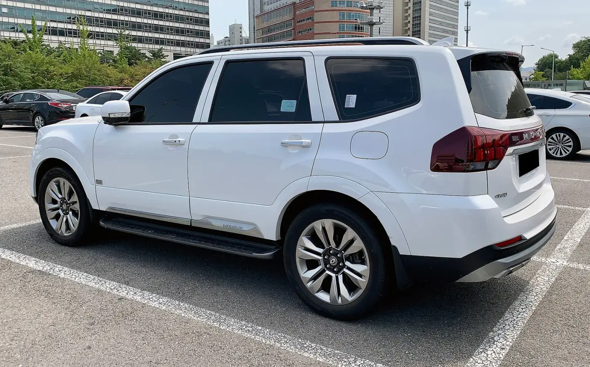
▲ 흰색 모하비의 측면에서 후면 쪽 3/4 모습. 연식은 확정하지 않았다 ⓒ Benespit (Wikimedia Commons, CC BY-SA 4.0)
| 항목 | 상태 |
|---|---|
| 케이카 모하비 하락의 직접 원인 | 보도문에 설명 없음 |
| 케이카 표본(세대·매물 수·산정 방식) | 공개 자료에서 확인 못 함 |
| 더 마스터 9월 시세 | 케이카 보도문에서 확인 못 함 |
| 모하비 단종 기념 한정판 | 공개 보도에서 확인 못 함 |
| 2026년 9월 기준 엔카·케이카 연식별 평균가 | 엔카 목록 요약과 2026년 1월 기사만 확인 |
| 부품 보유기간 원문 조항 | 검색 요약 확인, 원문 미열람 |
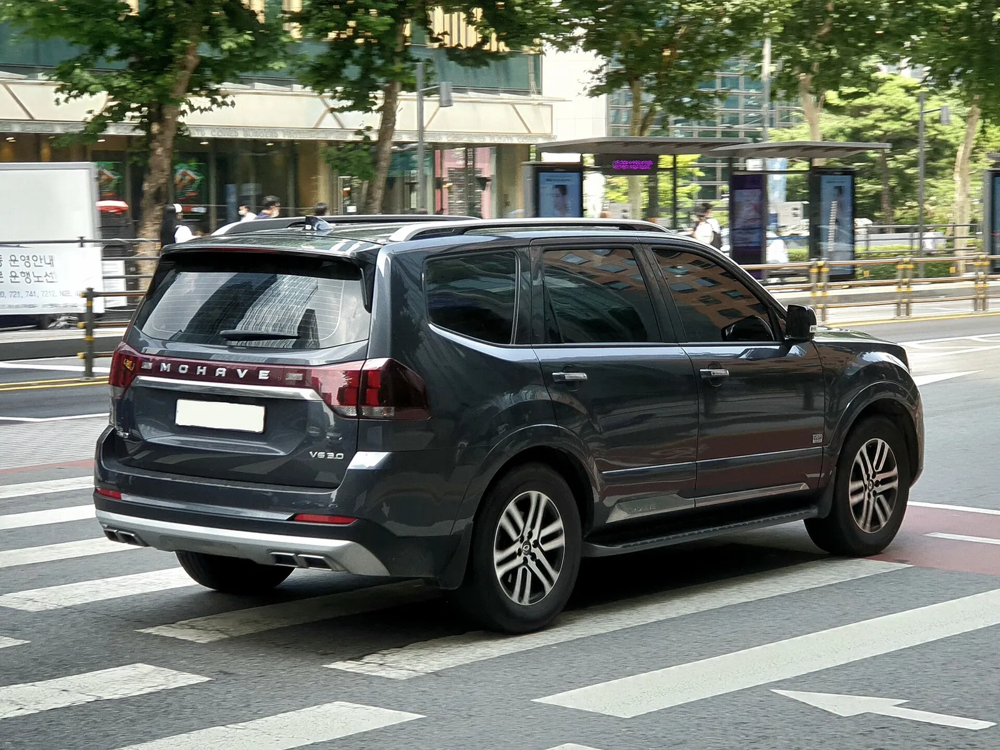
▲ 회색 모하비 후면. 연식 세부는 확정하지 않았다 ⓒ Damian B Oh (Wikimedia Commons, CC BY-SA 4.0)
9. 3년 보유하면 총비용은 얼마일까 — 감가율 시나리오
시세 하락이 걱정이라면 "산 가격에서 얼마나 빠지느냐"와 "타는 동안 드는 돈"을 한 번에 봐야 한다. 아래는 매입가 1,500만·2,000만·2,500만 원짜리 더 뉴 모하비를 3년 탄다고 가정한 계산이다. 연 감가율은 5%·10%·15%로 임의로 놓았고, 이 값은 케이카의 6.6%(한 달 낙폭)와 무관한 카프리즘의 가정이다. 3년 뒤 잔존가는 매입가 × (1 − 연 감가율)³, 유지비는 앞 절 2019년 등록 기준 연 합계 3,335,277원(자동차세 538,538 + 연료비 2,771,739 + 요소수 25,000)에 3년을 곱한 약 1,001만 원(3,335,277 × 3 = 10,005,831원)으로 잡았다.
| 매입가 | 연 감가 5% | 연 감가 10% | 연 감가 15% |
|---|---|---|---|
| 1,500만 원 | 1,215 (월 33.7) | 1,407 (월 39.1) | 1,579 (월 43.9) |
| 2,000만 원 | 1,286 (월 35.7) | 1,543 (월 42.8) | 1,772 (월 49.2) |
| 2,500만 원 | 1,357 (월 37.7) | 1,678 (월 46.6) | 1,965 (월 54.6) |
예를 들어 2,000만 원에 사서 연 10%씩 감가되면 3년 뒤 잔존가는 2,000 × 0.9³ = 1,458만 원, 감가는 542만 원이다. 여기에 유지비 1,001만 원을 더한 1,543만 원을 36개월로 나누면 월 약 42.8만 원이다. 같은 2,000만 원 차량도 감가율이 5%에서 15%로 나빠지면 월 비용이 약 13.5만 원(35.7 → 49.2) 벌어진다. 반대로 매입가가 500만 원 낮아지는 효과(2,500 → 2,000만 원)는 연 10% 기준 월 약 3.8만 원이다(46.6 − 42.8). 즉 매입 협상보다 "3년 뒤 얼마에 팔 수 있느냐"가 월 비용을 더 크게 흔든다. 보험료·정비비·소모품·취득세·이전비용은 빠져 있고, 자동차세는 차령 경감 변화를 반영하지 않았으며, 연료비는 경유 1,700원·연 1만 5000km 가정이다. 실제 월 비용은 이보다 높을 가능성이 크다.
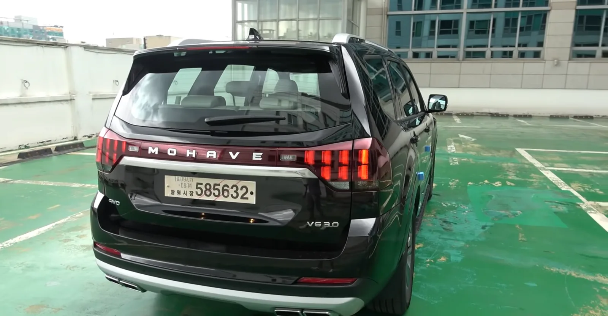
▲ 검은색 모하비 후면. 파일 정보에는 2020년으로 표기돼 있으나 연식은 확정하지 않았다 ⓒ 장대표TV (Wikimedia Commons, CC BY-SA 4.0)
✔ 자주 묻는 질문
Q. 단종 차량은 팔 때 불리한가? 이 글에서 확인한 보도만으로는 알 수 없다. 케이카도 단종과 -6.6%의 인과를 설명하지 않았다. 다만 부품 보유기간(2032년 7월 무렵 추정)이 가까워질수록 후속 구매자가 정비를 걱정할 수 있어, 3년 뒤 매각 시점의 감가율은 위 시나리오에서 보수적으로 15%를 보는 편이 안전하다. 이는 카프리즘의 판단이다.
Q. 진단서는 어디까지 믿나? 성능·상태점검기록부는 점검 시점의 상태를 기록한 문서이므로 프레임·하체·엔진·변속기 항목은 직접 확인하는 편이 좋다. 읽는 법은 중고차 성능점검기록부 읽는 법과 체크서머 점검 리포트 기사에 정리돼 있다.
Q. 연료비를 줄이려면 디젤 소형 SUV가 낫나? 연비 면에서는 그렇지만 차급이 다르다. 디젤 중고 대안은 스토닉 디젤 중고 구매 기사에서 따로 다뤘다.
10. 요약
케이카 9월 시세에서 더 뉴 모하비는 -6.6%로 국산 디젤 중 낙폭이 가장 컸다(디젤 평균 -0.8%, 8.25배). 단종은 생산 2024년 7월, 재고 판매 종료 2024년 12월로 이미 약 21개월 전 일이라 "단종 소식 때문에 빠졌다"는 근거는 확인하지 못했다.
'더 뉴 모하비'(1,416만~2,260만 원대)와 '더 마스터'(2,780만~5,763만 원대)는 가격대가 다르다. 더 마스터 범위는 trend10(2025년 상반기)과 오토트리뷴(2026.1) 값을 합친 것이다. 자동차세·연료비·요소수를 합친 연 유지비는 연 1만 5000km 가정 시 약 322만~353만 원이며 연료비가 대부분이다.
견인·오프로드 같은 분명한 목적이 있다면 고려할 만하지만, 시세차익 기대는 근거가 부족하다. 부품 권고 보유기간(2032년 7월 무렵 추정), 보증 승계, HECU 리콜 이행 여부를 구매 전에 확인하는 것이 안전하다.